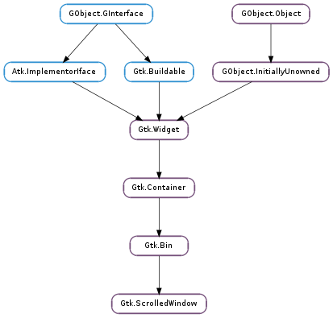

| Subclasses: | Gtk.PlacesSidebar |
|---|
| static | new(hadjustment, vadjustment) |
| add_with_viewport(child) | |
| get_capture_button_press() | |
| get_hadjustment() | |
| get_hscrollbar() | |
| get_kinetic_scrolling() | |
| get_min_content_height() | |
| get_min_content_width() | |
| get_placement() | |
| get_policy() | |
| get_shadow_type() | |
| get_vadjustment() | |
| get_vscrollbar() | |
| set_capture_button_press(capture_button_press) | |
| set_hadjustment(hadjustment) | |
| set_kinetic_scrolling(kinetic_scrolling) | |
| set_min_content_height(height) | |
| set_min_content_width(width) | |
| set_placement(window_placement) | |
| set_policy(hscrollbar_policy, vscrollbar_policy) | |
| set_shadow_type(type) | |
| set_vadjustment(vadjustment) | |
| unset_placement() |
| Name | Type | Flags | Description |
|---|---|---|---|
| hadjustment | Gtk.Adjustment | r/w | The Gtk.Adjustment for the horizontal position |
| hscrollbar-policy | Gtk.PolicyType | r/w | When the horizontal scrollbar is displayed |
| kinetic-scrolling | bool | r/w | Kinetic scrolling mode. |
| min-content-height | int | r/w | The minimum height that the scrolled window will allocate to its content |
| min-content-width | int | r/w | The minimum width that the scrolled window will allocate to its content |
| shadow-type | Gtk.ShadowType | r/w | Style of bevel around the contents |
| vadjustment | Gtk.Adjustment | r/w | The Gtk.Adjustment for the vertical position |
| vscrollbar-policy | Gtk.PolicyType | r/w | When the vertical scrollbar is displayed |
| window-placement | Gtk.CornerType | r/w | Where the contents are located with respect to the scrollbars. |
| window-placement-set | bool | r/w | Whether “window-placement” should be used to determine the location of the contents with respect to the scrollbars. |
| Name | Parameters | Return | Description |
|---|---|---|---|
| move-focus-out | Gtk.DirectionType | The ::move-focus-out signal is a keybinding signal which gets emitted when focus is moved away from the scrolled window by a keybinding. The Gtk.Widget ::move-focus signal is emitted with direction_type on this scrolled windows toplevel parent in the container hierarchy. The default bindings for this signal are Tab + Ctrl and Tab + Ctrl + Shift. | |
| scroll-child | Gtk.ScrollType, bool | bool | The ::scroll-child signal is a keybinding signal which gets emitted when a keybinding that scrolls is pressed. The horizontal or vertical adjustment is updated which triggers a signal that the scrolled windows child may listen to and scroll itself. |
Bases: Gtk.Bin
Gtk.ScrolledWindow is a Gtk.Bin subclass: it’s a container the accepts a single child widget. Gtk.ScrolledWindow adds scrollbars to the child widget and optionally draws a beveled frame around the child widget.
The scrolled window can work in two ways. Some widgets have native scrolling support; these widgets implement the Gtk.Scrollable interface. Widgets with native scroll support include Gtk.TreeView, Gtk.TextView, and Gtk.Layout.
For widgets that lack native scrolling support, the Gtk.Viewport widget acts as an adaptor class, implementing scrollability for child widgets that lack their own scrolling capabilities. Use Gtk.Viewport to scroll child widgets such as Gtk.Grid, Gtk.Box, and so on.
If a widget has native scrolling abilities, it can be added to the Gtk.ScrolledWindow with Gtk.Container.add (). If a widget does not, you must first add the widget to a Gtk.Viewport, then add the Gtk.Viewport to the scrolled window. Gtk.Container.add () will do this for you for widgets that don’t implement Gtk.Scrollable natively, so you can ignore the presence of the viewport.
The position of the scrollbars is controlled by the scroll adjustments. See Gtk.Adjustment for the fields in an adjustment - for Gtk.Scrollbar, used by Gtk.ScrolledWindow, the “value” field represents the position of the scrollbar, which must be between the “lower” field and “upper - page_size.” The “page_size” field represents the size of the visible scrollable area. The “step_increment” and “page_increment” fields are used when the user asks to step down (using the small stepper arrows) or page down (using for example the PageDown key).
If a Gtk.ScrolledWindow doesn’t behave quite as you would like, or doesn’t have exactly the right layout, it’s very possible to set up your own scrolling with Gtk.Scrollbar and for example a Gtk.Grid.
| Parameters: |
|
|---|---|
| Returns: | a new scrolled window |
| Return type: |
Creates a new scrolled window.
The two arguments are the scrolled window’s adjustments; these will be shared with the scrollbars and the child widget to keep the bars in sync with the child. Usually you want to pass None for the adjustments, which will cause the scrolled window to create them for you.
| Parameters: | child (Gtk.Widget) – the widget you want to scroll |
|---|
Used to add children without native scrolling capabilities. This is simply a convenience function; it is equivalent to adding the unscrollable child to a viewport, then adding the viewport to the scrolled window. If a child has native scrolling, use Gtk.Container.add () instead of this function.
The viewport scrolls the child by moving its Gdk.Window, and takes the size of the child to be the size of its toplevel Gdk.Window. This will be very wrong for most widgets that support native scrolling; for example, if you add a widget such as Gtk.TreeView with a viewport, the whole widget will scroll, including the column headings. Thus, widgets with native scrolling support should not be used with the Gtk.Viewport proxy.
A widget supports scrolling natively if it implements the Gtk.Scrollable interface.
| Returns: | True if button presses are captured during kinetic scrolling |
|---|---|
| Return type: | bool |
Return whether button presses are captured during kinetic scrolling. See Gtk.ScrolledWindow.set_capture_button_press ().
| Returns: | the horizontal Gtk.Adjustment |
|---|---|
| Return type: | Gtk.Adjustment |
Returns the horizontal scrollbar’s adjustment, used to connect the horizontal scrollbar to the child widget’s horizontal scroll functionality.
| Returns: | the horizontal scrollbar of the scrolled window, or None if it does not have one. |
|---|---|
| Return type: | Gtk.Widget |
Returns the horizontal scrollbar of scrolled_window.
| Returns: | the scrolling behavior flags. |
|---|---|
| Return type: | bool |
Returns the specified kinetic scrolling behavior.
| Returns: | the minimal content height |
|---|---|
| Return type: | int |
Gets the minimal content height of scrolled_window, or -1 if not set.
| Returns: | the minimum content width |
|---|---|
| Return type: | int |
Gets the minimum content width of scrolled_window, or -1 if not set.
| Returns: | the current placement value. See also Gtk.ScrolledWindow.set_placement () and Gtk.ScrolledWindow.unset_placement (). |
|---|---|
| Return type: | Gtk.CornerType |
Gets the placement of the contents with respect to the scrollbars for the scrolled window. See Gtk.ScrolledWindow.set_placement ().
| Return type: | hscrollbar_policy: Gtk.PolicyType, vscrollbar_policy: Gtk.PolicyType |
|---|
Retrieves the current policy values for the horizontal and vertical scrollbars. See Gtk.ScrolledWindow.set_policy ().
| Returns: | the current shadow type |
|---|---|
| Return type: | Gtk.ShadowType |
Gets the shadow type of the scrolled window. See Gtk.ScrolledWindow.set_shadow_type ().
| Returns: | the vertical Gtk.Adjustment |
|---|---|
| Return type: | Gtk.Adjustment |
Returns the vertical scrollbar’s adjustment, used to connect the vertical scrollbar to the child widget’s vertical scroll functionality.
| Returns: | the vertical scrollbar of the scrolled window, or None if it does not have one. |
|---|---|
| Return type: | Gtk.Widget |
Returns the vertical scrollbar of scrolled_window.
| Parameters: | capture_button_press (bool) – True to capture button presses |
|---|
Changes the behaviour of scrolled_window wrt. to the initial event that possibly starts kinetic scrolling. When capture_button_press is set to True, the event is captured by the scrolled window, and then later replayed if it is meant to go to the child widget.
This should be enabled if any child widgets perform non-reversible actions on Gtk.Widget ::button-press-event. If they don’t, and handle additionally handle Gtk.Widget ::grab-broken-event, it might be better to set capture_button_press to False.
This setting only has an effect if kinetic scrolling is enabled.
| Parameters: | hadjustment (Gtk.Adjustment) – horizontal scroll adjustment |
|---|
Sets the Gtk.Adjustment for the horizontal scrollbar.
| Parameters: | kinetic_scrolling (bool) – True to enable kinetic scrolling |
|---|
Turns kinetic scrolling on or off. Kinetic scrolling only applies to devices with source Gdk.InputSource.TOUCHSCREEN.
| Parameters: | height (int) – the minimal content height |
|---|
Sets the minimum height that scrolled_window should keep visible. Note that this can and (usually will) be smaller than the minimum size of the content.
| Parameters: | width (int) – the minimal content width |
|---|
Sets the minimum width that scrolled_window should keep visible. Note that this can and (usually will) be smaller than the minimum size of the content.
| Parameters: | window_placement (Gtk.CornerType) – position of the child window |
|---|
Sets the placement of the contents with respect to the scrollbars for the scrolled window.
The default is Gtk.CornerType.TOP_LEFT, meaning the child is in the top left, with the scrollbars underneath and to the right. Other values in Gtk.CornerType are Gtk.CornerType.TOP_RIGHT, Gtk.CornerType.BOTTOM_LEFT, and Gtk.CornerType.BOTTOM_RIGHT.
See also Gtk.ScrolledWindow.get_placement () and Gtk.ScrolledWindow.unset_placement ().
| Parameters: |
|
|---|
Sets the scrollbar policy for the horizontal and vertical scrollbars.
The policy determines when the scrollbar should appear; it is a value from the Gtk.PolicyType enumeration. If Gtk.PolicyType.ALWAYS, the scrollbar is always present; if Gtk.PolicyType.NEVER, the scrollbar is never present; if Gtk.PolicyType.AUTOMATIC, the scrollbar is present only if needed (that is, if the slider part of the bar would be smaller than the trough - the display is larger than the page size).
| Parameters: | type (Gtk.ShadowType) – kind of shadow to draw around scrolled window contents |
|---|
Changes the type of shadow drawn around the contents of scrolled_window.
| Parameters: | vadjustment (Gtk.Adjustment) – vertical scroll adjustment |
|---|
Sets the Gtk.Adjustment for the vertical scrollbar.
Unsets the placement of the contents with respect to the scrollbars for the scrolled window. If no window placement is set for a scrolled window, it defaults to Gtk.CornerType.TOP_LEFT.
See also Gtk.ScrolledWindow.set_placement () and Gtk.ScrolledWindow.get_placement ().